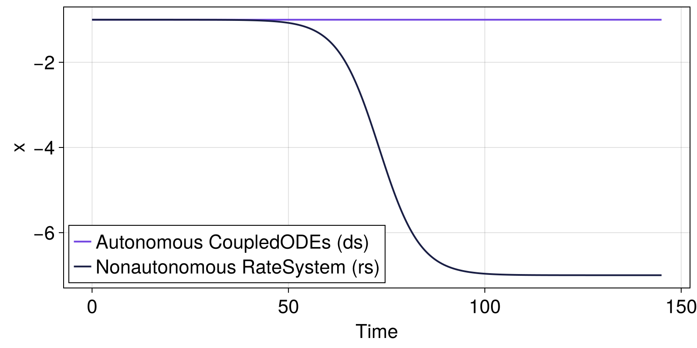
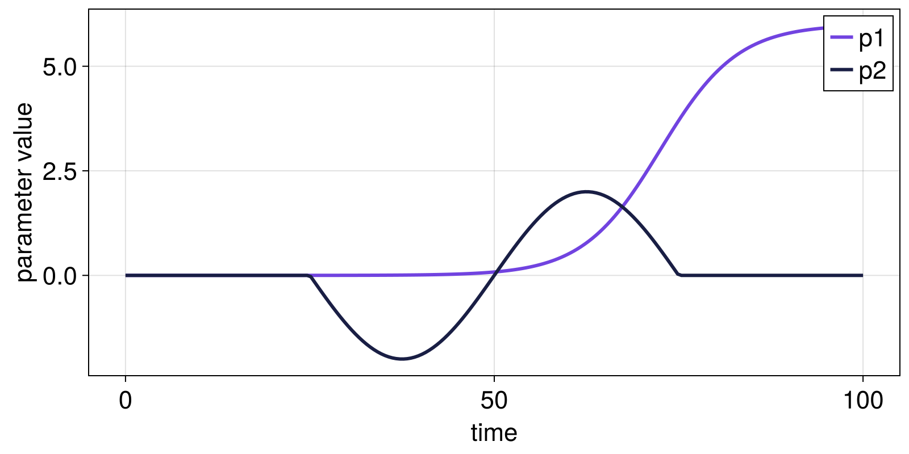

Example: Defining a RateSystem
Consider a dynamical system ds with autonomous drift (a CoupledODEs or CoupledSDEs with autonomous drift) of which you want to ramp one or more parameters, i.e. change the parameter values over time.
Using the RateSystem type, you can achieve this in two steps:
- Specify a
dictcontaining - for each parameter you would like to ramp - aForcingProfilethat describes the rampings' shapep(t)over aninterval. - Apply these parametric forcings to the system
dsby constructing aRateSystem.

The profiles' intervals are rescaled to system time units using the configured start and duration values. Then, for each ramped parameter, for
t < forcing_start_time- the system has an autonomous drift, with parameter given by the underlying system
ds
- the system has an autonomous drift, with parameter given by the underlying system
forcing_start_time < t < forcing_start_time + forcing_duration- the system has a non-autonomous drift with the parameter given by the respective
ForcingProfile, multiplied byforcing_scale
- the system has a non-autonomous drift with the parameter given by the respective
t > forcing_start_time + forcing_duration- the system has again an autonomous drift, with parameter fixed at the value attained at the end of the forcing interval (i.e. at
t = forcing_start_time + forcing_duration).
- the system has again an autonomous drift, with parameter fixed at the value attained at the end of the forcing interval (i.e. at
This setting is widely used and convenient for studying rate-dependent tipping.
Example 1: single-parameter RateSystem
using CriticalTransitions
using CairoMakie
using StaticArrays
function f(u, p, t)
x = u[1]
dx = (x + p[1])^2 - 1
return SVector{1}(dx)
end
x0 = [-1.0]
ds = CoupledODEs(f, x0, [0.0]) # one-parameter autonomous system1-dimensional CoupledODEs
deterministic: true
discrete time: false
in-place: false
dynamic rule: f
ODE solver: Tsit5
ODE kwargs: (abstol = 1.0e-6, reltol = 1.0e-6)
parameters: [0.0]
time: 0.0
state: [-1.0]
Forcing profile (section of a function over an interval)
profile(t) = tanh(t)
interval = (-5.0, 5.0)
fp = ForcingProfile(profile, interval)ForcingProfile{typeof(Main.profile), Float64}(Main.profile, (-5.0, 5.0))Note that the interval is given in arbitrary units - the profile is rescaled to your system's units in the next step, where we apply the forcing to the first parameter
pidx = 1
forcing_start_time = 20.0
forcing_duration = 105.0
forcing_scale = 3.0
t0 = 0.0
rs = RateSystem(ds, Dict(pidx => fp); forcing_start_time, forcing_duration, forcing_scale, t0)1-dimensional RateSystem
deterministic: true
discrete time: false
in-place: false
dynamic rule: RateSystemSpecs
parameters: [0.0]
time: 0.0
state: [-1.0]
Note that the forcing_scale is a multiplication factor that scales the profile fp.profile. Here, we have $p(5)-p(-5) \approx 2$, so the amplitude of the parameter change is $6$ after multiplying with forcing_scale = 3.
You can get the parameter value at a given time
println("p(t=0) = ", parameter(rs, 0.0, pidx))p(t=0) = 0.0You can modify the forcing later to achieve different rates with set_forcing_duration! and set_forcing_scale!.
The RateSystem type behaves just like the type of underlying autonomous system, in this case a CoupledODEs. Thus, we can simply call the trajectory function to simulate either the autonomous system ds or the nonautonomous system rs.
T = forcing_duration + 40.0 # total simulation time
traj_ds = trajectory(ds, T, x0)
traj_rs = trajectory(rs, T, x0)(1-dimensional StateSpaceSet{Float64} with 1451 points, 0.0:0.1:145.0)Let's compare the two trajectories:
fig = Figure();
axs = Axis(fig[1, 1]; xlabel="Time", ylabel="x");
lines!(
axs,
t0 .+ traj_ds[2],
traj_ds[1][:, 1];
linewidth=2,
label="Autonomous CoupledODEs (ds)",
);
lines!(
axs,
traj_rs[2],
traj_rs[1][:, 1];
linewidth=2,
label="Nonautonomous RateSystem (rs)",
);
axislegend(axs; position=:lb);
fig
While the autonomous system ds remains at the fixed point $x^*=-1$, the nonautonomous system tracks the moving equilibrium until reaching the stable fixed point $x^*=-7$ of the future limit system (i.e. the autonomous limit system after the parameter change) where p=6.
Example 2: multiple-parameter RateSystem (Dict-based forcing)
Define a slightly different system with two parameters to demonstrate forcing two keys Parameter 1 enters nonlinearly, parameter 2 shifts the drift additively
function f2(u, p, t)
x = u[1]
dx = (x + p[1])^2 - 1 + 0.2 * p[2]
return SVector{1}(dx)
end
x0 = [-1.0]
p0 = [0.0, 0.0]
ds2 = CoupledODEs(f2, x0, p0)1-dimensional CoupledODEs
deterministic: true
discrete time: false
in-place: false
dynamic rule: f2
ODE solver: Tsit5
ODE kwargs: (abstol = 1.0e-6, reltol = 1.0e-6)
parameters: [0.0, 0.0]
time: 0.0
state: [-1.0]
Two forcing profiles
fp1 = ForcingProfile(tanh, (-5.0, 5.0))
fp2 = ForcingProfile(sin, (-pi, pi))
forcing = Dict(1 => fp1, 2 => fp2) # keys are parameter indices (or keys accepted by `set_parameter!`)Dict{Int64, ForcingProfile{F, Float64} where F} with 2 entries:
2 => ForcingProfile{typeof(sin), Float64}(sin, (-3.14159, 3.14159))
1 => ForcingProfile{typeof(tanh), Float64}(tanh, (-5.0, 5.0))Per-key control for start/duration/scale
rs2 = RateSystem(ds2, forcing;
forcing_start_time = Dict(1 => 20.0, 2 => 25.0),
forcing_duration = Dict(1 => 105.0, 2 => 50.0),
forcing_scale = Dict(1 => 3.0, 2 => 2.0),
t0 = 0.0,
)1-dimensional RateSystem
deterministic: true
discrete time: false
in-place: false
dynamic rule: RateSystemSpecs
parameters: [0.0, 0.0]
time: 0.0
state: [-1.0]
Sample parameters over time and plot both forced parameters
tvec = range(0.0, 100.0; length = 200)
ps = parameters.(Ref(rs2), tvec)
p1 = getindex.(ps, 1)
p2 = getindex.(ps, 2)
fig = Figure()
ax = Axis(fig[1, 1]; xlabel = "time", ylabel = "parameter value")
lines!(ax, tvec, p1; label = "p1")
lines!(ax, tvec, p2; label = "p2")
axislegend(ax)
fig
Note that the RateSystem constructor accepts either scalar forcing_start_time, forcing_duration, forcing_scale values (applied to all keys) or dictionaries mapping each key to its own value.